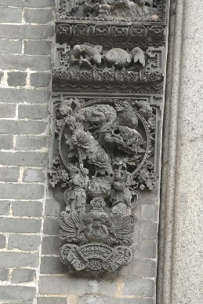

东方朔偷桃
东方朔（公元前154—公元前93年），字曼倩，汉代厌次（今山东惠东）人。善辞赋，性格诙谐滑稽，言词敏捷。汉武帝初即位时，征天下贤良学士，他上书自荐，皇帝感到非常惊奇，后任常侍郎、大中大夫等职。常以笑话、历史故事等为谏，有时也直言讽刺谏诤武帝的过失，被认为是忠臣。东方朔幼年家贫，母早丧。传说他因生活困难，遂往天宫求助，适逢王母开蟠桃盛会。他在瑶池宝阁偷吃了仙桃，被守护神擒住捆绑去见王母娘娘，他用滑稽的语言反复申辩，说得王母娘娘十分喜悦，就赦免了他的罪过。并赐仙酒仙肴给他。东方朔捧偷桃的故事表达了人们祈盼健康长命的愿望，常用作祝寿。
麻姑献寿
麻姑是中国古代神话传说中的一位女寿仙，传说三月初三王母娘娘寿辰时，召开蟠桃会，群仙齐为祝寿。百花、牡丹、芍药和海棠四位仙子采花，特邀麻姑同往。麻姑于是在绛珠河畔以灵芝酿酒，献给王母娘娘祝寿。由此而演变成为一种习俗，为女性祝寿，一般都会赠送麻姑像表示敬意和祝贺。
「位于：中进东路」